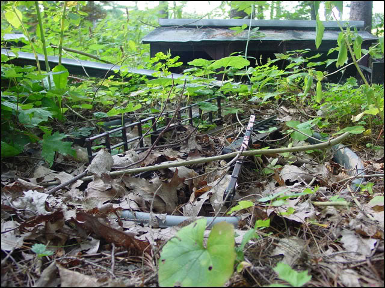
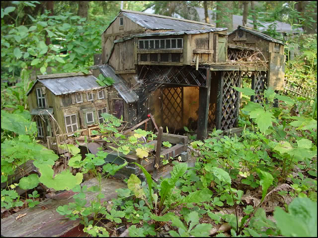

|
operating for several seasons in the deep forest of south-central New York state. but there was always a problem.. Huge leaves constantly fell from the towering pine trees above, in massive numbers! here is a view of the infamous leaves: It might not look like much..but those leaves are each 6-feet long! They would constantly foul the rails, making travel very difficult. Even though the railroad used on-board fuel, and not electric rails like other systems, making track maintance somewhat easier, still the branches proved a never-ending operational headache..the entire system had to swept and cleaned every time a train wished to operate! the track crew was ready to revolt! something drastic needed to be done.. So in the Spring of 2007, after 5 years of trying make it work in this location, management made the decision to MOVE the entire railroad!! All equipment was picked up and moved to a nearby, different portion of the forest, where things are much more favorable. A few important structures were also moved to the new location, but many buildings and bridges were simply left behind and abandoned. Sometime soon I will post a message about the "new and improved" StoneHedge & Shadypines Railroad..but today we are exploring the remains of the OLD one! In late summer of 2008 I made the trek into the deep woods to see if anything was still visable from the old Stonehedge & shadypines RR.. It has been two full summers since the railroad was abandoned, and nature is already beginning to quickly reclaim the right of way and the few structures that remain. Coming up a small rise, the abandoned remains of the old engine terminal come into view:  Wow..things have deteriorated quickly! in a few more years you will probably be unable to tell that a railroad had ever been here. Heading down the hill, I walked up to the old turntable and roundhouse area. the turntable pit is still visable, and the old bridge is still intact.. the center of the pit is quickly filling with vegetation:  Just beyond the turntable lies the sad remains of the 3-stall roundhouse: The old coaling tower, and the original single-stall engine house, (used before the roundhouse was built) Here is a view of this same location back in happier days, when the railroad was still thriving here: cDCPa_0092.jpg the trestle leading up to the coaling tower has begun to fall down. Nearby lies the abandoned Black Diamond mine..which went out of business when the railroad left town.  Continuing the trek through the dense undergrowth, I came across a pile of abandoned rail: Left behind by the railroad when they ripped up the line.. I suspect they will probably be back for this rail, since its still in good condition. Trekking out along the abandoned roadbed, I came across the remains of the famous "Red Bridge" And here is a photo of the bridge in days past: Dcpa_0059.jpg And thats it for this sad tour.. but dont be too sad! because the railroad lives yet!
|